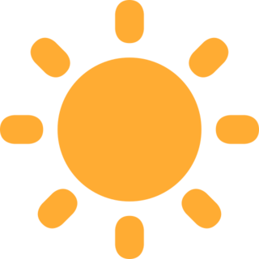

Explore Projects
Twitter has been built on open source since the beginning. Openness is part of our DNA. The projects you see here were born at Twitter, and patches are always welcome!

Heat
Heat means work.
Upstream contributions, bug fixes, designs, docs--the rigorous work that drives the community.

Light
Light means visibility.
For the projects, contributions, opportunities, challenges, and people that impact the community.

Love
Love means culture and support.
Why we care. How we work. Actions that grow the community.